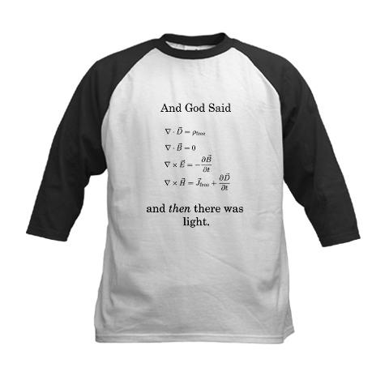

Data Structures, Data-Bases
──────────────────
PyAtl
2011 September 8
Brandon Craig Rhodes
──────────────────
!
To clearly see your data
is as important as writing
beautiful code about your data

Feynman
Feynman diagram
The Nobel Prize in Physics 1965
was awarded jointly
Sin-Itiro Tomonaga
Julian Schwinger
Richard P. Feynman
“for their fundamental work
in quantum electrodynamics (QED),
with deep-ploughing consequences for the
physics of elementary particles.”
All three scientists
had the same idea
the same math
But physics students still use
Feynman diagrams
Why?
Because visualization is a
key component of thinking
See the recent book
Creating Scientific Concepts
by Nancy Nersessian

Nersessian:
To produce abstract differential equations
Maxwell had to use visual physical analogies
Computer Programming
Fred Brooks: The Mythical Man-Month
Famous 1975 book about software projects

Fred Brooks: The Mythical Man-Month
“The bearing of a child takes nine months,
no matter how many women are assigned.”
Fred Brooks: The Mythical Man-Month
“Show me your flowchart
and conceal your tables,
and I shall continue to be mystified.
Show me your tables,
and I won't usually need your flowchart;
it'll be obvious.”
(1975)
Idea
Data structures drive code
A test
Take 3 seconds to look at each
of the following slides
1. Code
Ready?
departments = defaultdict(list)
for employee in get_employees():
dept = employee.department.abbreviation
departments[dept].append(employee)
2. Data
{'hr': [<employee Jamie Vasta>,
<employee Clare Lurie>],
'ops': [<employee Harriett Sutherlin>,
<employee Louisa Savell>],
'research': [<employee Clinton Hobbler>,
<employee Max Grosse>,
<employee Tia Limones>]}
Claim:
A data structure and the code
that produces it are isomorphic
BUT
Seeing the data structure
imposes a lower cognitive overhead
If Brooks is right
then Python possesses advantages
that I had never noticed before
Python is well-known for making
code clean, elegant, beautiful
But if Brooks is right
then we ought also pay attention
to how Python makes data beautiful
{'hr': [<employee Jamie Vasta>,
<employee Clare Lurie>],
'ops': [<employee Harriett Sutherlin>,
<employee Louisa Savell>],
'research': [<employee Clinton Hobbler>,
<employee Max Grosse>,
<employee Tia Limones>]}
Q: Why can we Python programmers
immediately read and understand
this expression?
A:
Because unlike several popular languages,
Python offers standard representations
of its most basic data structures
Building a dictionary
1.
teams = {'Highlanders': 'New York',
'Senators': 'Washington',
'Browns': 'St. Louis'}
2.
teams = {}
teams['Highlanders'] = 'New York'
teams['Senators'] = 'Washington'
teams['Browns'] = 'St. Louis'
3.
teams = dict(Highlanders='New York', Senators='Washington',
Browns='St. Louis')
teams = {'Highlanders': 'New York',
'Senators': 'Washington',
'Browns': 'St. Louis'}
This is kind of weird
- Not strictly necessary
- Can only be used at creation time
- Looks nothing like the dict's use
But
It gives all Python
programmers a common picture
of the dictionary data structure
We all have the same picture
in our heads when we talk about
dicts, lists, tuples, and sets
If Fred Brooks is right…
Show me your [data structures],
and I won't usually need your [code];
it'll be obvious.”
…then Python's clear syntax
is also important because it lets
you draw pretty pictures of your
data structures in your program!
Your Python programs are
a mix of sequential procedures
and of data structure declarations
teams = {'Highlanders': 'New York',
'Senators': 'Washington',
'Browns': 'St. Louis'}
Fred Brooks would claim that the
declarations are at least as important!
Now, think about databases
If Fred Brooks is right,
the ability to see your data
accelerates your ability
to write code
NoSQL
The new generation of NoSQL databases,
instead of offering a mere API, offer you
a picture of how your data looks
MongoDB
> db.plants.find({name: "Huperzia appressa"})
{"_id" : "Huperzia appressa",
"common_names": ["mountain firmoss"],
"habitat" : ["alpine", "cliffs", "mountains"],
"family" : "Huperziaceae"}
Q:
How often do you go behind
your application to look at
your actual database?
A:
If your answer is “never” because
your database is behind an ORM, then:
- Debugging can be more difficult
- Bulk operations can become impossible
- You might lack as clear a picture
If Fred Brooks is right
Then a direct view into your database,
and comfort in directly manipulating it,
offers conceptual power
SQL
- Very powerful
- But very complex
- Does that keep you away?
Find a database simple enough
and a good enough fit for you
that you are not afraid to USE it
ORMs
Too often, an ORM is a symptom
of the fact that you have chosen
too complex a database for your
own capabilities
Seek out…
…a database that makes you happy
to look inside and manipulate
records directly!
Thank you!
(To get the Maxwell T-shirt:
cafepress.com)